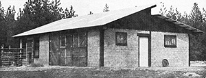
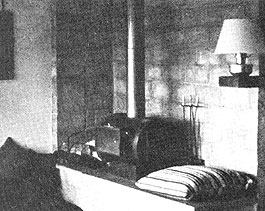

A few years ago-while reading Ken Kern's fine book, The Owner-Built Home, I came across something which brought me right up out of my chair: the CINVA Ram, a manually operated machine that makes ordinary earth into substantial 4 X 6 X 12-inch construction bricks.
Since I'm always on the lookout for inexpensive building supplies, I was (to say the least) intrigued by the idea of turning soil into concrete-like blocks. I confess I was skeptical, however, that plain old garden-variety dirt?for gosh sakes-could be used as a construction medium here in the cold, damp eastern edge of Washington State.
After reading more about compacted earth, however, I learned that its main limitation?vulnerability to attack by moisture?could be overcome through the addition of cement to the raw soil as a "stabilizing agent". Well, that was enough to convince me to give it a try . . . so I chipped in with some friends on a CINVA Ram and proceeded to build my barn, chickenhouse, and hearth entirely out of soil-cement blocks.
Now, two years later, I'm happy to report that the structures have all successfully weathered one reasonably severe winter and, in general, have lived up to my highest expectations. Soil-cement not only has excellent insulative qualities but is strong, durable, fireproof, easy to work with, and extremely low in cost. (My blocks set me back three cents each . . . and they wouldn't even have cost that much if I'd not been forced to buy clay and sand to add to our silty local soil!) In short, soil-cement is everything I think a building material should be.
THE CINVA RAM
In case you're wondering, CINVA is an acronym for the Inter-American Housing and Planning Center of Bogota, Colombia . . . while Ram is taken from the name of Paul Ramirez, the Chilean engineer who invented this brick making device in the mid-fifties.
The CINVA Ram consists of a box or mold which is filled with damp soil?cement, and a lever-actuated piston that compresses the earth-binder mix. Once the mold has been loaded with the proper amount of material, the machine's operator then forces its long handle down with a pressure of 70 to 100 pounds (exerting, in turn, 40,000 pounds of pressure on the soil that is being compressed). The brick formed by this procedure is then ejected, set in a cool place, and left to cure for up to three weeks.
Though not technically difficult, making construction blocks with a CINVA Ram is what is known as a "labor intensive" operation. Four adults?working in an organized assembly line with the aid of a mechanized cement mixer?can produce only about 50 of the 4 X 6 X 12-inch bricks an hour. (Since a couple thousand of the blocks are needed for even a small house, you can see why few people ever attempt this construction technique alone!)
To be fair, though, and give the other side of the story: CINVA Ram bricks may, be labor intensive to fabricate . . . but they're also strong, durable, fireproof, cost very few out-of-pocket dollars, and have good insulative qualities. In short, if you've got more time than money, you want to build with native materials, and you need a structure that will last . . . a soil-cement mixture formed into blocks with a CINVA Ram may be just the answer for you (as it has been for me).
The basic brickmaking process can be broken down into five steps: [1] analysis of the soil, [2] sifting of the earth, [3] preparation of the mix, [4] manufacture of the blocks, and [5] the curing of the bricks.
We'll discuss each of these activities in some detail.
Analysis of the soil that will be transformed into bricks is the first (and probably most complicated) step in the manufacture of pressed-earth blocks. You must know the composition of the dirt you intend to use before you can estimate the amount of cement?and/or missing "native" constituents?that must be added to the final "mix".
All soils are made up of three components: sand, silt, and clay. These components are defined on the basis of particle size (sand being the coarsest of the three and clay the finest).
Somewhat sandy earth seems to make the best CINVA Ram blocks and the optimum soil for the bricks is made up of approximately 75% sand and only 25% silt and clay. (The clay alone should never comprise less than 10% or more than 50% of the total.) A good deal of variation from this ideal is permissible, though. According to the instructions which came with our machine, "Most earth, when reasonably free from vegetable matter, will make good compressed-earth blocks."
You can get a rough idea of the composition of your soil by simply picking up a handful and feeling it. Sand?naturally-has a coarse and gritty texture, while silt has the consistency of flour. Moist clay is smooth to the touch, is somewhat sticky, and will form a ribbon as you compress it between your thumb and forefinger.
To better estimate the percentages of each component: [1] Fill a straight-sided glass jar about one?third full of earth. [2] Add an equal volume of water. [3] Cover the jar and shake vigorously to suspend all the dirt. [4] Finally, allow the slurry to sit undisturbed about 30 minutes or until the soil has settled into three separate layers with the sand at the bottom.
Whatever the consistency of your soil, it must be dried and sieved (to remove large lumps, stones, leaves, and other impurities) before the dirt can be properly mixed with cement and compressed into blocks.
The soil has the proper moisture content for sifting when [1] a handful can be squeezed without water appearing on its surface, and [2] the ball of earth disintegrates without lumps as it's released. Damp soil of this kind can easily be pushed through a quarter-inch screen.
You can construct a sturdy sieve in any of a number of ways. Ours, for example, is simply a piece of hardware cloth mounted on a three-foot-square frame made of 2 X 4 lumber. The important thing is to keep the structure lightweight and small enough to handle easily, because you'll need to dump an accumulation of stones and other material off the screen every now and then.
We found it convenient to make a stand for our sifting tray to rest on while in use. Three sides of the support's base are walled in solid to keep the sifted soil neatly confined as it falls through the screen on top . . . and the fourth side was left open so that we can shovel the dirt out as we want it.
Once your soil has been dried and sifted, you can begin to prepare the mix from which your bricks will be pressed.
The amount of portland cement you use will depend upon the composition of the earth you have at hand: Sandy loams must be fortified?by volume?with from 4.75 to 9.10% cement, desert-like silty dirts need 8.35 to 12.5% of the stabilizer, and clayey soils require 12.5 to 15.4% of the binder. More than 15.4% cement is not recommended.
It's actually rather easy to calculate these proportions. For instance, to get a 10%-cement mix, you'll need to measure out one cubic foot of portland cement for every nine cubic feet of sifted, dry soil. This isn't at all difficult to do if you can scrounge up some buckets or containers?preferably with handles?of known volume to work with.
Thoroughly combine all the dry ingredients: cement, sifted dirt, and special additions?such as sand or clay?that may be needed to "round out" your soil's composition. A cement mixer made this part of the job easier for us . . . but?if you can't obtain one of the machines?you can rake the materials together by hand on any level, hard, and nonabsorbent surface. Just take care to avoid contaminating the mix.
The final ingredient that you'll need to make blocks-water?must be added a little at a time until the damp soil-cement reaches the right consistency. (Here, we used a garden hose with the nozzle adjusted to produce a fine spray.) There are several ways to tell when you should stop adding the liquid. For one thing, if you take a small amount of mix and form it into a ball in your hand, the resulting clod should both hold its shape and not stain your palm. The ball should also pull apart without disintegrating, and should?when dropped from a height of 1.1 meter (43.3 inches)?shatter into a loose material that resembles the original mix.
The soil-cement can now be loaded into the CINVA Ram's mold. About the only tricky part of this procedure is filling the box with exactly the right amount of the mixture each time.
With a little experience, you'll be able to tell if the Ram contains as much of the earth?binder mix as it should by the pressure required to depress the machine's long handle. Ideally, you should be able to feel some resistance . . . but it shouldn't be necessary to "fight" the lever down. I can only suggest that you make a number of trial bricks?employing carefully measured amounts of soil?cement?to determine the correct loading volume, then make an appropriately calibrated scoop. (We used a plastic bleach bottle with the bottom cut away, while some friends of ours built a solid little wooden scoop that's easier to handle?and more accurate?than our recycled model.)
Removing the fresh blocks from the Ram calls for a delicate touch, as the bricks are plastic and fragile when newly formed. The Ram's instruction booklet suggests that "you place hands flat at the ends of the block, being careful not to damage the corners or edges, and then gently lift the block from the mold box". We had more success pressing our palms flat against the long, narrow sides of the bricks instead (as shown in one of the accompanying photographs).
Place the bricks as soon as possible on a flat, non-absorbent surface (a board or slab of cement covered with sheets of plastic is ideal) in a shady environment to cure. Be sure to set each block on edge and to space the bricks far enough apart so that they don't touch. And please note that bare ground-which will draw water from the blocks so rapidly that they'll be weakened and may even crack?is NOT an acceptable surface upon which to age your bricks.
If possible, the curing site should be located directly adjacent to the Ram since you'll find it difficult to carry the freshly molded bricks very far. Ken Kern?in The Owner-Built Home's chapter on pressed block construction?suggests that you erect your building's roof first, so that you can then use the protected area underneath as a curing "yard".
The slower the soil-cement blocks dry, the stronger they'll be. Which means that?during the first four days of their cure?you should keep your bricks covered with plastic. Also, beginning 24 hours after they leave the Ram, the soil?cement blocks must be thoroughly sprinkled three times a day with the fine spray from a garden hose. The bricks may be stacked on the fourth day, but the sprinkling should be continued for another eight days. Finally, three weeks after leaving the mold, the blocks can be used in construction.
The same building techniques used with concrete blocks can be employed with your bricks of pressed earth. Before laying soil-cement blocks, though, it's a good idea to dip them in water to prevent them from absorbing moisture from the mortar (thereby weakening it) used to hold them together.
As usual, courses of the bricks should be laid in such a way that the vertical seams in one row coincide with the center-points of the blocks in the course above. Also, the mortar in all joints should be no more than one centimeter (four-tenths of an inch) thick.
Because our winters are so cold and wet here in eastern Washington, we felt it prudent to seal our blocks (and thus waterproof them for good). To do this, we applied a clear acrylic masonry sealer to the finished soil-cement walls. Numerous other paint and plaster finishes, of course, would have done the job just as well.
It's sad, but there aren't really many books around on the subject of building with pressed-earth blocks. One fact-packed text I can recommend to anyone interested in this kind of construction is the Handbook for Building Homes of Earth, by L. Wolf skill, W. Dunlop, and B. Callaway Also, of course, Ken Kern devotes a chapter to the topic in The Owner-Built Home.
Beyond that, you're on your own. Just [1] buy a CINVA Ram, [2] enlist the aid of a few friends, and [3] have at it.
So what if you do live in a part of the country where the winters are frigid and damp? Cold weather or not, pressed earth works beautifully. Believe me. I know.
Before you begin to think about building a house, barn, or other habitable structure out of pressed-earth blocks, you should make sure that the soil-cement mixture you're using is the best one possible. How? Start by creating bricks from four trial mixes: one containing the maximum amount of cement, one with the minimum amount, and two with intermediate concentrations of the binder. 'Let the blocks cure for 15 days, then test them in each of the following capacities:
TENSILE STRENGTH: Lay a block across two supports spaced 20 centimeters (eight inches) apart, and place weights one by one atop the brick's center until it breaks. The mix producing the strongest block is best.
HARDNESS: A nail driven with your bare hand should penetrate no deeper than five centimeters (about two inches) into the block.
SOUND: When struck lightly with a hammer, the brick should produce a metallic sound.
UNIT WEIGHT: That mix which produces the block having the greatest weight?and therefore the least pore space-should be considered best.
SHRINKAGE: There shouldn't be any. Measurable contraction after curing means that the mix either contained too much clay, or too little cement. Or. both.
For other structural testing techniques, see the Handbook for Building Homes of Earth (mentioned in article), or talk to your local building inspector . . . which is something you'll have to do sooner or later anyway.
|
 Author's barn was built of soil-cement blocks using CINVA Ram. It has already withstood a rainy Pacific northwest winter. |
Making blocks is labor intensive, but not ""difficult per se. Children can sift soil and fill calibrated buckets for adult in charge. |
 Not only barns, but hearths can be made with soil blocks. |
|
This close-up photo shows how hearth corner was made. |
|
|